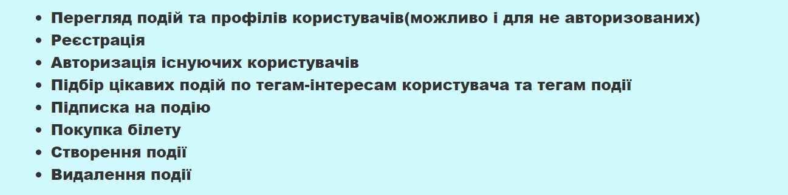
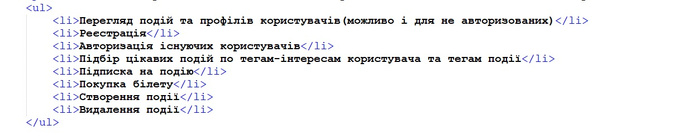

ЗВІТИ З ЛАБОРАТОРНИХ РОБІТ
З ДИСЦИПЛІНИ "ІНТЕРНЕТ-ТЕХНОЛОГІЇ ТА ПРОЕКТУВАННЯ WEB-ЗАСТОСУВАНЬ"
Бригада №6 | Студенти групи ІС-02
СКРІНШОТ СПИСКУHTML-код СПИСКУТЕОРЕТИЧНА ЧАСТИНАТЕГ ULАтрибути
ТЕГ LIАтрибути
|
©Розроблено студентами групи ІС-02